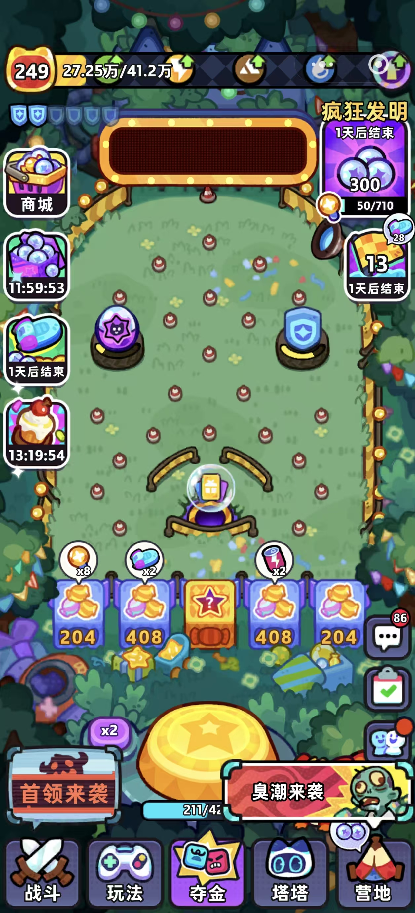

鸡宝厨房 / FARM / MODULAR ASSET LANGUAGE
先有对象，再有营地。
4 个透明建筑 · 14 个独立 SVG 环境模块 · 原有鸡宝角色 · 代码绘制地面
局部语言测试，不是完整 Farm。没有地图底图、生成角色或镜头缩放原型。
轮廓
暖深棕外边，内部线更轻。
空间
同一斜俯视，按脚点排列。
地面
低对比色块和连续路径。
独立性
位置、阴影、遮挡由代码控制。
Farm Asset Language Board
格纹用于证明透明背景，不属于资产两个局部，检验同一套对象
均为 390 × 844这些是评审工具，不是玩家摆放功能。
同尺寸并排：参考、旧场景、模块测试
各屏等比缩至 195 × 422；不以放大倍率制造差异塔塔截图按原比例完整缩入 195×422；左右存在极窄留边。其它画面为 390×844 的二分之一。题材差异保留。
三张参考各自证明什么
加载插画 ≠ 营地 ≠ 活动界面